La pagina dei kit permette di gestire la creazione, la modifica, la cancellazione di kit e materiali.
La pagina dei kit è divisa in tre colonne:
A sinistra la lista completa di kit disponibili
Al centro i dati generali del kit selezionato
A destra la lista ordinata di passate da eseguire con il kit selezionato
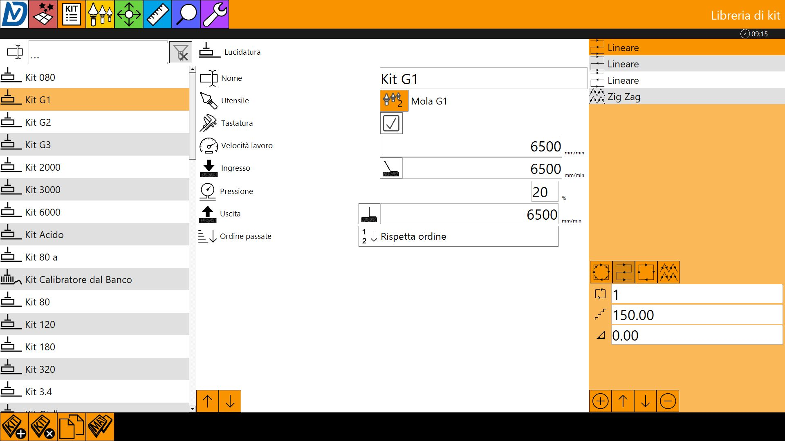
Categorie
I kit sono divisi in due categorie:
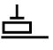 | Lucidatura |
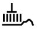 | Calibratura |
Pulsanti
Le due tipologie hanno proprietà e comportamenti diversi che verranno descritti successivamente. Cliccando sull’icona, si cambierà tipologia di kit.
 | Aggiungi kit |
Rimuovi kit | |
Duplica kit | |
Gestione materiali |
Lista di Kit
È presente sul lato sinistro della pagina, la stessa lista è presente anche in altre pagine del software come quella di gestione dei materiali o applicazione dei kit.
È possibile scorrere la lista sia con la barra di scorrimento che facendo scorrere il cursore all’interno della lista. In alto è posto il filtro che permette di visualizzare solo i kit che corrispondono al criterio del filtro.
Filtro non attivo | |
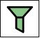 | Filtro attivo |
 | Sposta posizione kit |
Parametri del kit
I kit sono divisi in due tipologie, le quali hanno un comportamento e dei parametri diversi.
Alcuni parametri sono comuni:
Tipologia | Calibratura o lucidatura |
Nome | nome univoco che identifica il kit |
Utensile | scelto fra la lista degli utensili disponibili è quello utilizzato per eseguire la lavorazione |
Tastatura | indica se deve eseguire la misura della lunghezza utensile ad inizio lavorazione. |
Velocità di lavoro | utilizzata per i movimenti scelti con le passate |
Calibratura
La calibratura, da eseguire con utensile diamantato, è l’operazione di asportazione materiale necessaria per livellare il materiale. Se lo spessore da asportare è superiore alla capacità dell’utensile utilizzato, è necessario effettuare più passaggi a diversi step per ottenere il risultato desiderato.

I parametri caratteristici della calibratura sono:
Ingresso: permette di scegliere tipologia e velocità
 | Ingresso diretto |
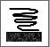 | Ingresso a spirale |
Obiettivo calibratura:
 | Livella pezzo |
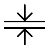 | Spessore obiettivo |
Parametri
Z avvicinamento | quota a cui si porta l’utensile prima di partire con l’ingresso. |
Passo in Z | asportazione dell’utensile durante la lavorazione. Se l’obiettivo della calibratura è più grande del “Passo in Z” verranno eseguite più passate fino ad arrivare allo spessore desiderato. |
Ultima passata | se i parametri di step e velocità sono diversi da zero utilizza questi per eseguire una finitura sul pezzo. |
Lucidatura
La lucidatura, da eseguire con utensile lucidante, è l’operazione di trattamento superficiale che solitamente coincide con la finitura del pezzo. Per eseguire questa operazione vengono utilizzati utensili particolari con diversi gradi di finitura. Il risultato finale sarà la somma di tutte le passate effettuate da ogni utensile.
Caratteristica fondamentale della lucidatura è il fatto di poter decidere la forza da applicare sull’utensile espressa come percentuale, dove 0% corrisponde a circa 20Kg e 100% corrisponde a circa 220Kg.
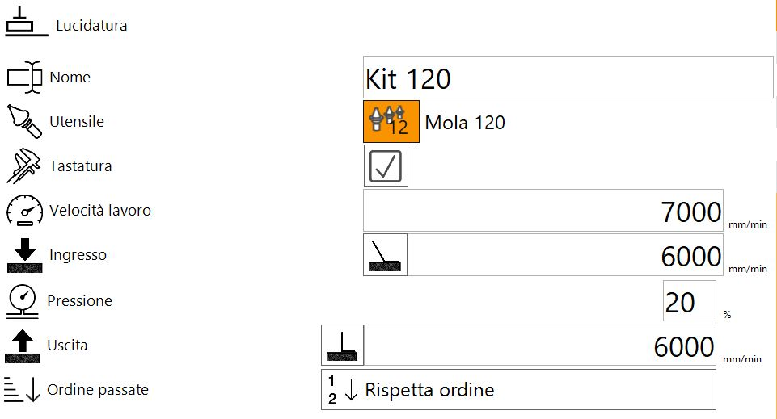
I parametri caratteristici della lucidatura sono:
Ingresso: permette di scegliere tipologia e velocità
 | Ingresso diretto |
 | Ingresso a rampa |
Parametri
Pressione | è espressa in percentuale dove 0% corrisponde a circa 20Kg e 100% corrisponde a circa 220Kg. |
Uscita | permette di scegliere il tipo e la velocità. |
 | Uscita diretta |
 | Uscita a rampa |
Ordine passate: indica se far vincere l’ordine impostato o se creare variazione scegliendo la passata in modo casuale
Passate
Descrivono i movimenti che l’utensile esegue sull’area del pezzo. Per ogni kit è prevista la possibilità di aggiungere una serie di passate sequenziali, anche con tipologia e parametri diversi.

Per ogni passata, selezionandola nella lista, è possibile definire il tipo e i parametri ad essa associati.
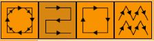 | Tipologia passate |
 | Inserisci nuova passata |
 | Rimuovi passata |
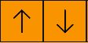 | Modifica ordine lista |
Passata perimetrale
Effettua il passaggio completo sul perimetro del pezzo il numero di volte indicato dal parametro.
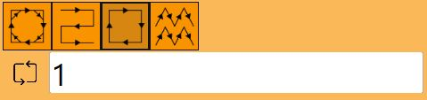 | 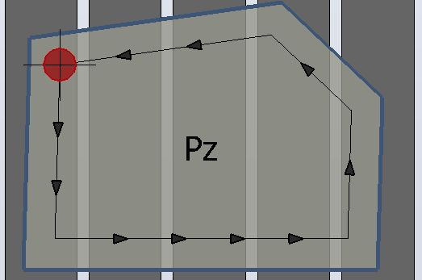 |
|---|
Ripetizioni perimetro |
Passata lineare
Effettua movimenti lineari paralleli fra loro con distanza e direzione impostati nei parametri
 |  |
|---|
 | Ripetizioni lavorazione |
 | Distanza |
 | Direzione |
Passata angolare
Gli angoli sono i punti più difficile da lavorare in quanto c’è meno presenza di passaggi dell’utensile in quell’area. La passata angolare effettua dei passaggi a triangolo ripetitivi su ogni vertice della figura.
Se il numero passaggi triangolari maggiore di 2, il percorso effettuato dall’utensile sull’angolo non sarà sempre uguale, ma varierà automaticamente in modo da non insistere sullo stesso punto.
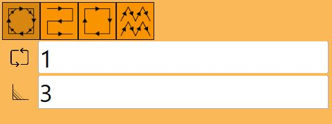 |  |
|---|
 | Numero ripetizioni |
 | Numero passaggi |
Passata Zig-Zag
Per creare variabilità effettua un movimento a zig-zag che segue linee orizzontali.
 | 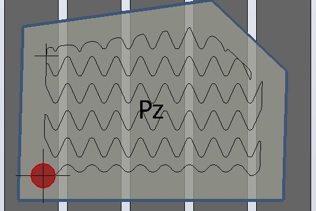 |
|---|
 | Numero ripetizioni |
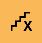 | Passo |
Altezza Zig-Zag |
Materiale
Il materiale è un insieme ordinato di kit. Agevola l’operatore nell’applicazione della sequenza di kit sul pezzo.
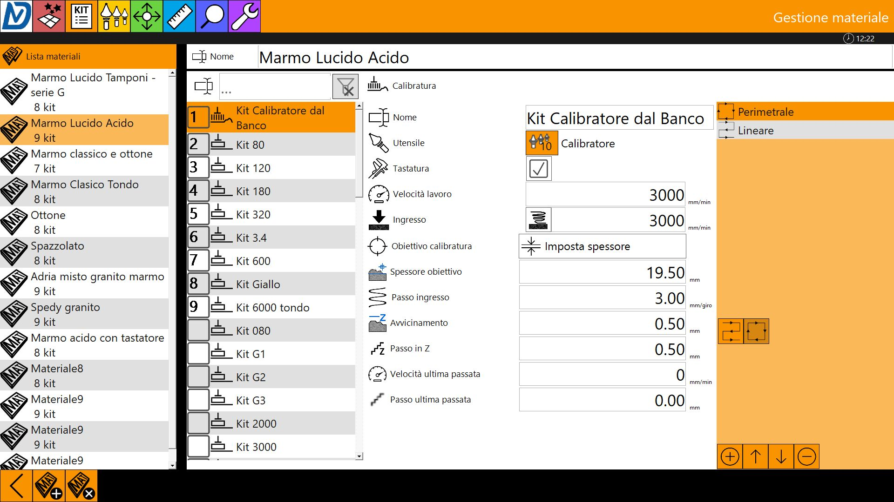
Sulla sinistra è presente la lista dei materiali creati. Ogni materiale è contraddistinto dal nome, il quale appare in alto a centro schermo ed è modificabile a piacimento.
La lista di kit, diversamente da quella presente nella pagina “kit”, presenta una casella in cui appare il numero della posizione nella sequenza. Alla selezione, del kit, questo cambierà posizione e si accoderà in fondo alla lista numerata aggiudicandosi l’ultimo numero.
Per creare quindi un materiale:
Impostare il nome
Premere nell’area del quadrato vuoto sulla riga del kit che si vuole inserire per primo.
Proseguire poi con la selezione nell’ordine corretto degli altri kit.
Il kit può essere tolto dalla lista ripremendo sul numero.
L’unico modo per ordinare i kit è selezionarli nell’ordine corretto.
Inserisci nuovo materiale | |
 | Rimuovi materiale |